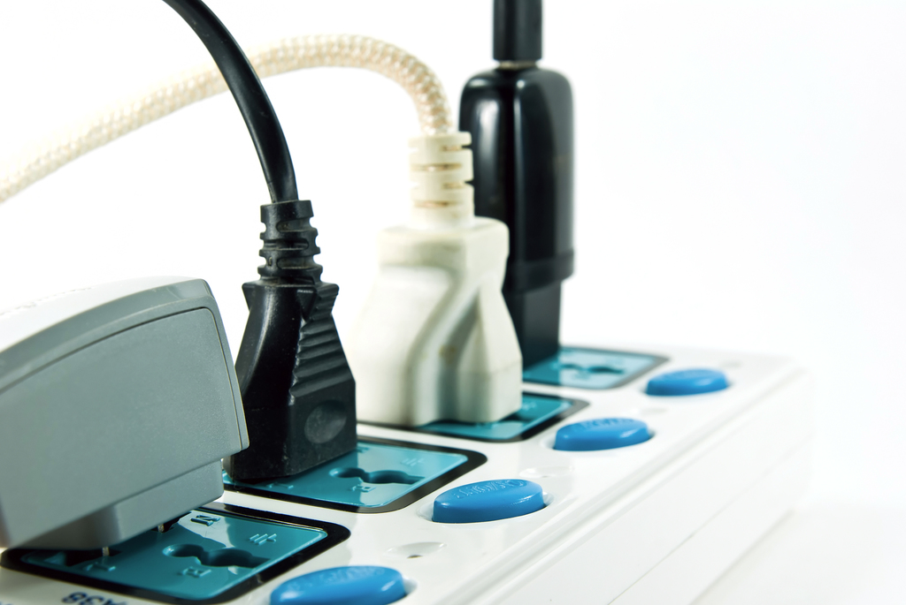

| 1 |
|
Many fires start due to electricity because of faulty wiring or leaving appliances plugged when not using. |
The only simplest way to prevent this is to unplug items when not in use and to fix wiring. |
| 2 |
 |
Plugging lots of appliances on one extension may overheat the extension and cause a fire |
Simply don't use too many appliances at once or if needed consult an electrician to fix all wiring without any risks |
3 |
|
When cooking most meals involve grease or oil, which is very flammable. |
When cooking make sure to keep an eye on the stove at all times, never leave the stove open unattended. |
4 |
|
Candles can easily be knocked down and reached by children, which can result in an accident which can start a fire. |
Keep candles in a candle holder and away from children, or don't use candles at all but instead use rechargable light sources in absence of electricity |
5 |
|
Flammable items such as bleach or sprays may cause fires when kept near stoves or other electrical appliances. |
Store flammable items in shelfs or cupboards away from potentially igniting appliances. |
6 |
|
Due to the summer heat some dried leaves may vatch on fire. |
Remove and clear out all dried leaves. |